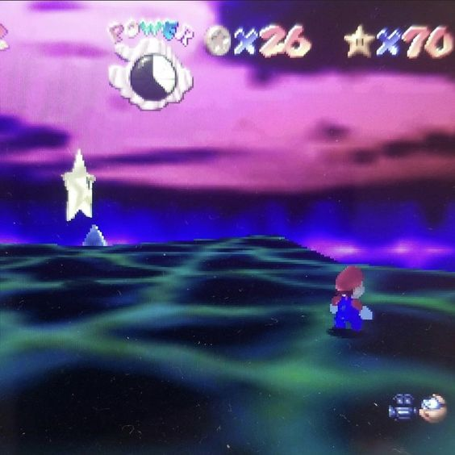

Super Mario 64 was released in 1996. This classic 3D platformer dazzled with its gameplay, which was groundbreaking at the time of its release. Still, today the game is perhaps best remembered for its imaginative game design and its perfect use of nostalgic ambiance and haunting liminality.
